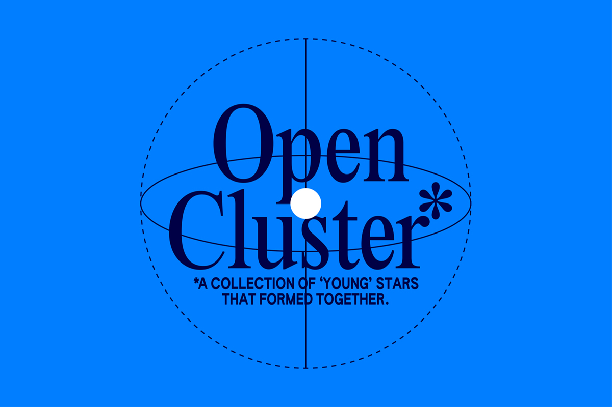
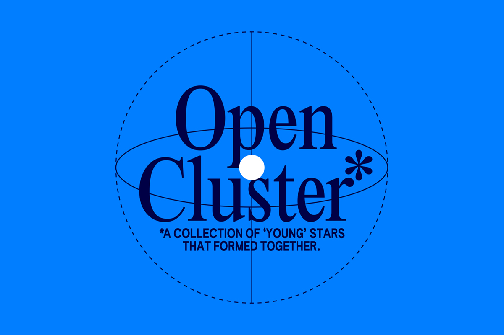

Graphic Design Studio based in Rotterdam


↓ Who we are
Founded by Two is an multidisciplinary graphic design studio who focuses on commissioned and self-initiated projects with an emphasis on publication design and visual identities. The studio was founded in 2020 by two designers who will
graduate the summer of 2021 from the Royal Academy of Art in The Hague at that point they will have studied graphic design for the last 8 years. These two have become native speakers in visual language and found out while studying
together they share this love for design and typography. This results—often—in the production of books, websites, posters and visual identities. In the end we are just two designers who started a studio together, just two designers who
love playing chess and experience love at first sight with beautiful designed books.
↓ What we do
Founded by Two are two designers who will approach each project as a new story to tell, with a desire to develop bold visual concepts with the perfect design solutions, always adapted to the needs of each project. There process-driven
work often consist of a deep visual research, a feeling for image making and a happy accident once in a while. These two designers specialise in designing publications and visual identities, they use various techniques and programs to get
the result they aim for. If we feel like the studio for your design problems feel free to contact us by mail or phone.
They design digital and printed media such as posters and publications, visual identities, websites, moving images and installations. Founded by Two seeks to form close-relationships with artists, designers, curators, publishers, cultural organisations and institutions.
They design digital and printed media such as posters and publications, visual identities, websites, moving images and installations. Founded by Two seeks to form close-relationships with artists, designers, curators, publishers, cultural organisations and institutions.
↓ Adress
Bloemstraat 11
3014 KA, Rotterdam
The Netherlands
3014 KA, Rotterdam
The Netherlands
↓ Phone & Mail
↓ Socials
Do you want to have a walk with us on the internet? Follow us on Instagram for daily updates, listen to our playlist on Spotify while you scroll through our Pinterest boards, sent us a message on LinkedIn, check out our work on Behance, take a look at our YouTube videos and have a glimpse at two millennials trying to do TikTok in 2021.
→ playlist 1
→ playlist 2
→ playlist 3
→ playlist 4
→ playlist 5

 
